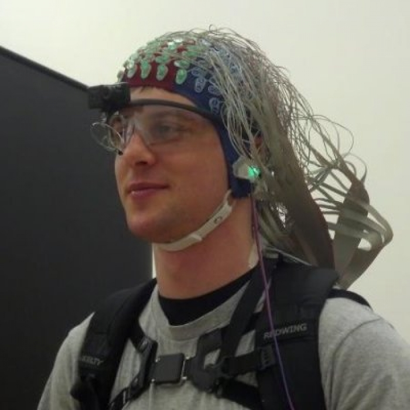

About

Hi, I'm Steve: avid gamer, programmer, electrical engineer,
and college instructor.
In short, I wear lots of hats and
spend the bulk of my time in front of soft-glowing rectangles.
Work
At my current gig, I am a software and networking instructor at
Chippewa Valley Technical College (CVTC) and loving it. I have taught
- Programming Fundamentals
- Object-Oriented Programming
- Agile Programming with Design Patterns
- Software Developer Exploration
- IT Management Concepts
- IT Service Center
- Web 1 - HTML and CSS
- Database 1
- Java Web Programming
- Network Diagramming
Education
I am a proud graduate of Marquette University where I obtained
a Bachelors of Science in Electrical and Electronic Engineering
and a minor in Mathematics.
Experience
I've touched basically everything on computers including
- Electrical and electronic design (Zzzzt!)
- Assembly languages (AVR, 68000)
- Low level languages (C, C++)
- High Level languages (C#, Java, Python, VBA)
- Web languages (HTML, CSS, JavaScript, jQuery)
- Markup languages (XML, JSON, CSV, Markdown, etc.)
- Scripting (Enough to be dangerous)
- SQL and databases (SQL Server and SQLite)
More specifically, I've hacked away at
- Circuit board design and printing
-
Passive amplifiers, active amplifiers, FPGA's, motor controllers,
ADC's, DAC's, multiplexers, etc.
- Embedded platforms (68000, Arduino, AVR, Raspberry Pi,
and a couple custom SBC's)
- RS-232, I2C, and SPI serial communications
-
Proportial-Integral-Derivative (PID) control loops for temperature
and motor control
-
Operating System Design and Implementation
(context switching, scheduling, interrupts, memory management, etc.)
- Software Development Methodologies (Waterfall and Agile)
-
Object-oriented design patterns (MVC, factory, builder, strategy,
state, humble-object, etc.)
-
Artificial intelligence algorithms (depth-first search (DFS),
breadth-first search (BFS), and Dijkstra's algorithms.
Less in A* search, fuzzy logic, neural networks, and
genetic algorithms yet enough that I could probably toss something together
give enough time and motivation.)
- Unit-testing frameworks (NUnit, JUnit, QUnit, and DIY)
- Web frameworks (web2py, servlets)
- IoC Containers (Unity, Ninject, and DIY)
- Multithreading (threads, threadpools, PLINQ, and async/await)
- Various IDE's (Visual Studio, Eclipse, and Unity3D)
Portfolio
To be blunt, a lot of software and hardware engineering I've done
is proprietary and/or under non-disclosure agreements.
That means the code isn't mine, and I don't get to share :(
NSerialProtocol
Under Construction
Slfy JS - Under Construction
Under Construction
Malaria Early Warning (MEW)
Under Construction
Résumé
Summary
-
Eight years in software engineering supporting medical devices,
electronic control systems, website development, and embedded systems
using a range of tools including .NET technologies, SQL databases,
embedded systems, and more
-
Experience in object-oriented design and patterns, software
life-cycle processes, and test-driven development towards
improving software quality
-
Two years as co-founder and co-owner of an engineering consulting and prototyping firm
Technical Skills
Advanced or proficient knowledge with
-
C#, WPF, Java, C, C++, Python, HTML, CSS, XML, JavaScript, jQuery,
SQL, assembly, and more
-
Microsoft Visual Studio, Microsoft SQL Server Management Studio,
unit testing frameworks, mocking libraries, IoC Containers, MVVM frameworks,
profilers, gaming frameworks, web application frameworks, ladder logic,
control systems, numerous hardware peripherals, circuit design, and more
Work Experience
Independent Contracting
Software Engineer January 2014 - July 2016
-
Constructed C# application to select desired LED light
frequency for use in blood parameter probes
-
Coached clients about complicated software architecture
and processes
Medical Device Company May 2014 - October 2015
Software Engineer
-
Contributed as the sole software engineer on a multidisciplinary
team creating embedded C software testing ultrasonic air
sensors to prevent bubbles entering a patient’s bloodstream
during heart surgery
-
Designed C# application to read and write embedded system’s
EEPROM, decreasing development time by an estimated 2
weeks per test system
-
Taught new employees non-product software validation to
assure that the intended use of software met the requirements
of end-users and complied with regulatory bodies including
the FDA
Pharo LLC
Co-owner, Co-founder, Software Engineer January 2012 - April 2014
-
Managed overall affairs of our organization to maintain
daily operation and was a key motivator
-
Developed website using SQL, Python, and R to visualize
the spatial and temporal spread of malaria in northwest
India, providing critical data to health policymakers in the
region
-
Constructed a multithreaded C# gait event detector for a
stroke rehabilitation research laboratory
-
Engineered temperature-controlled bath for experiments
to manipulate heat-activated enzymes by rapidly changing
water temperature in under 20 seconds
-
Designed C# simulation software for Lionite hardboard
plant to increase product throughput by 31%
-
Trained new employees with our company processes,
technology, and projects
Firework Company
Software Engineer October 2011 - April 2012
-
Launched and tested new digital firing system using
C# to synchronize music to firework displays
Rockwell Automation
Firmware and Software Co-op June 2008 - May 2010, alt. semesters
-
Managed competitive benchmarking project to evaluate
products against competitors
-
Mentored and supervised new intern in designing
C# tool to fix corrupted save files
Education
-
B.S. Electrical and Electronic Engineering,
Marquette University, May 2011, magna cum laude
-
Engineering societies: IEEE, Tau Beta Pi,
Eta Kappa Nu
Additional
-
Undergraduate research on operating systems,
Embedded Xinu Project, June 2010 - May 2011
-
Senior Design Course, NASA Lunabotics Mining Competition,
September 2010 - May 2011
Hire